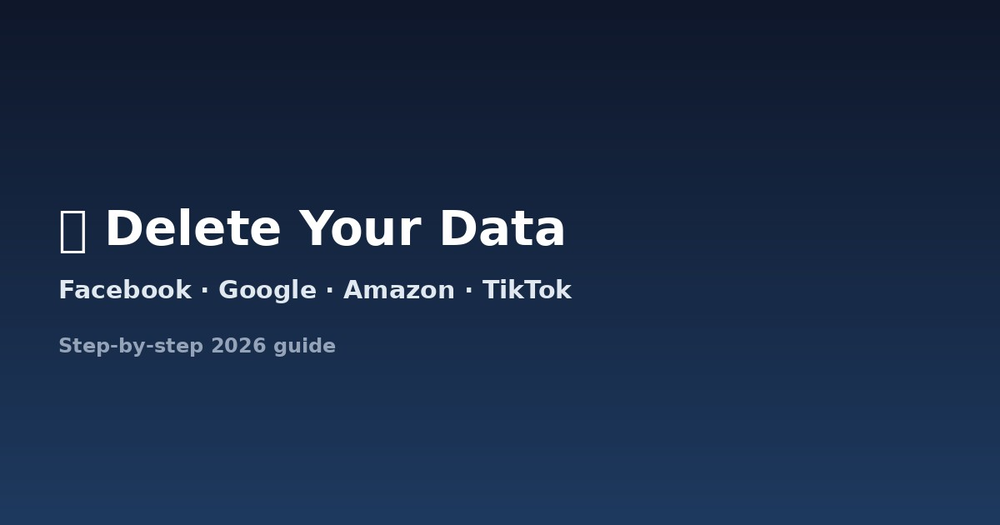

How to Delete Your Data from Facebook, Google, Amazon & More
Updated: July 31, 2026 · 11 min read

Every major platform handles account and data deletion differently. Some give you a one-click option; others bury it, and some don't offer full deletion at all — meaning your only real option is a formal legal request. Here's exactly what to do for each of the platforms people ask about most.
Before you start: download a copy of anything you want to keep (photos, order history, messages). Deletion under privacy law is permanent — there's no undo once it's processed.
Facebook / Instagram (Meta)
- Go to Settings & Privacy → Settings → Accounts Center.
- Select Personal Details → Account Ownership and Control → Deactivation or Deletion.
- Choose the account, then select Delete Account (not just "Deactivate," which only hides your profile and keeps your data).
- Meta gives you a 30-day grace period — logging back in during this window cancels the deletion. After 30 days, deletion begins and can take up to 90 days to fully complete across their systems.
Note: content you sent to others (messages, comments on their posts) may remain, since it's considered their data too.
- Sign in at myaccount.google.com.
- Use Google Takeout first if you want to export your data (Gmail, Photos, Drive, search history).
- Go to Data & Privacy → Delete a Google service to remove individual products, or Delete your Google Account to remove everything.
- To remove personal information from Google Search results specifically (not just your account), use Google's dedicated "Results about you" tool and removal request form — this is separate from deleting your account.
Amazon
- Amazon doesn't offer a simple self-serve "delete account" button — you need to contact Amazon Customer Service directly and explicitly request account closure.
- Before requesting, cancel any active subscriptions (Prime, Kindle Unlimited) separately, since account closure doesn't automatically stop billing.
- Because there's no self-serve tool, this is a good case for a formal written request citing your erasure right — use the DataShredder generator to draft one instantly.
- Go to Settings & Privacy → Account Preferences → Account Management → Close Account.
- Select a reason and confirm with your password.
- Cancel any Premium subscription first — closing the account doesn't automatically cancel billing.
TikTok
- Go to Profile → Settings and Privacy → Account → Deactivate or delete account.
- Choose Delete Account. TikTok also applies a 30-day grace period before permanent deletion.
X (formerly Twitter)
- Go to Settings and Privacy → Your Account → Deactivate your account.
- X holds deactivated accounts for 30 days before permanent deletion begins.
Any Other Company — Banks, Retailers, Apps, Data Brokers
Most companies don't have a public "delete my account" button at all. For these, a formal written request is the only reliable path:
- Find the company's privacy or DPO email — usually in their privacy policy footer.
- Generate a free, properly formatted erasure request citing GDPR Article 17, CCPA, LGPD, or PDPL depending on where you or the company are based.
- Send it, and note the date — most laws require a response within 30 to 45 days.
- If ignored, escalate to your national Data Protection Authority — find yours via the European Data Protection Board's member directory. This is explained in detail in our GDPR rights guide.
Deactivating vs. Deleting: Know the Difference
Almost every platform separates these two actions, and companies often nudge you toward the weaker option:
- Deactivating hides your profile from others but the company keeps all your data, ready to restore it the moment you log back in.
- Deleting is intended to permanently remove your data after a grace period, and is the option that actually satisfies your legal right to erasure.
Preventing Your Data from Piling Up Again
- Set social profiles to private and turn off public search-engine indexing where the option exists.
- Regularly review and delete old posts, photos, and comments you no longer want public.
- Turn off ad personalization and shorten data-retention windows in account settings where available.
- Avoid creating new accounts with your full real name or primary email when it isn't necessary.
No delete button for the company you're thinking of?
Generate a formal, legally-worded deletion request for any company in the world — free, in your browser, nothing stored.
Generate My Free Request →Steps and menu paths above reflect each platform's process as of mid-2026 and may change — check the platform's own help center if a menu doesn't match. This article is general information, not legal advice.